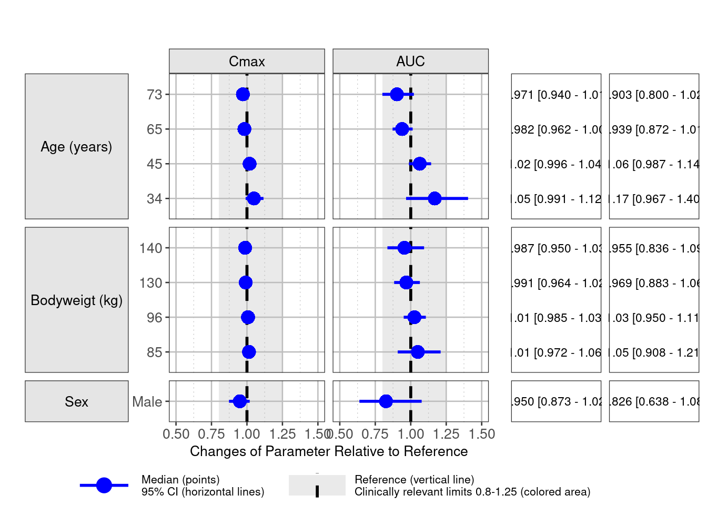

Simulation-based forest plots with NMsim
Philip Delff
Boris Grinshpun
November 11, 2024
Source:vignettes/NMsim-forest.Rmd
NMsim-forest.Rmd## NMsim 0.1.4.911. Browse NMsim documentation at
## https://nmautoverse.github.io/NMsim/## NMdata 0.1.8. Browse NMdata documentation at
## https://nmautoverse.github.io/NMdata/
library(NMcalc)
library(coveffectsplot)## Thank you for using coveffectsplot!
## if you find it useful, please cite as:## JF Marier, N Teuscher and MS Mouksassi. Evaluation of covariate effects using forest plots and introduction to the coveffectsplot R package. CPT Pharmacometrics Syst Pharmacol. 2022;11:1283-1293. doi:10.1002/psp4.12829
NMdataConf(
as.fun="data.table",
path.nonmem = "/opt/NONMEM/nm75/run/nmfe75",
dir.sims="simtmp-forest",
dir.res="simres-forest"
)
file.mod <- "NMsim-forest-models/xgxr134.mod"
data.ref <- NMscanData(file.mod)## Model: xgxr134
##
## Used tables, contents shown as used/total:
## file rows columns IDs
## xgxr134_res.txt 731/731 12/12 90/90
## xgxr134_etas.txt 731/731 5/5 90/90
## xgxr2covs.rds (input) 731/1502 24/26 90/90
## (result) 731 41+2 90
##
## Input and output data merged by: ROW
##
## Distribution of rows on event types in returned data:
## EVID CMT output result
## 0 2 641 641
## 1 1 90 90
## All All 731 731
#### Section start: Simulations with parameter uncertainty ####
### sim pars vs covs
doses <- NMcreateDoses(TIME=0,AMT=30,addl=list(ADDL=100,II=24),col.id=NA)
covs <- expandCovs(
AGE=list(ref=median,quantiles=c(10,25,75,90)/100,label="Age (years)"),
## notice, values OR quantiles can be provided
WEIGHTB=list(ref=median, quantiles=c(10,25,75,90)/100, label="Bodyweigt (kg)"),
MALEN=list(ref=c(Female=0), values=c(Male=1), label="Sex"),
data=data.ref,
as.fun="data.table"
)
covs[,ID:=.GRP,by=.(type,covvar,covval)]
dt.dos <- covs[,doses[],by=covs]
dt.dos
## add a sampling scheme
time.sim <- data.table(TIME=(0:24)+30*24,period="Steady-State")
dt.sim <- addEVID2(dt.dos,TIME=time.sim,CMT=2)
ext <- sampleParsSimpar(file.mod=file.mod,nsim=500,seed.R=6789)
## library(devtools)
## load_all("~/wdirs/NMsim")
if(F){
simres.forest <- NMsim(file.mod # path to NONMEM model
,data=dt.sim, # simulation dataset
,name.sim="forest_simpar" # output name suffix
##,method.sim=NMsim_VarCov # sampling method
,method.sim=NMsim_VarCov # sampling method
,ext=ext
,typical=TRUE # FALSE to include BSV
,table.vars=cc(PRED,IPRED) # output table variables
,method.update.inits="nmsim" # update parameters from ext
## ,nsims=2 # number of simulations
## ,subproblems=10 # number of simulations
,seed.R=342 # seed for reproducibility
,sge=TRUE # TRUE if submitting to a cluster
,nc=1
## ,reuse.results=TRUE # TRUE to load existing results
,quiet = FALSE ## FALSE to view all output messages
,reuse.results=TRUE
)
}
simres <- NMreadSim(simres.forest,wait=T,rm.tmp=TRUE)
simres <- NMreadSim("simres-forest/xgxr134_forest_simpar_MetaData.rds")
## source("~/wdirs/NMpub/ACOP2024/forest/forest_summarize.R")
########## postprocess
### Exposure metrics
funs.exposure <- list(
"Cmax"=function(x) max(x$PRED)
,"AUC"=function(x) trapez(x$TIME,x$PRED)
## ,"Concentration at 4 hours"=function(x) x$value[x$TAPD==4]
)
sum.uncertain <- NMsim:::summarizeCovvar(simres,
funs.exposure = funs.exposure,
by=cc(period),
cover.ci=.95
)Plotting using coveffectsplot.
sum.uncertain.plot <- copy(sum.uncertain)
setnames(sum.uncertain.plot,
cc(covvalf,predmm,predml,predmu,metric.var),
cc(label,mid,lower,upper,paramname)
)
sum.uncertain.plot[,MEANVAL:=mid]
nsig <- 3
sum.uncertain.plot[,LABEL := sprintf("%s [%s - %s]",signif2(mid,nsig),signif2(lower,nsig),signif2(upper,nsig))]
sum.uncertain.plot[,covname:=covlabel]
escape_newline <- function(s) {
gsub("\\\\n", "\\\n", s)
}
### where is this supposed to come from?
label_value <- function(x,... )x
textsize <- 10
forest1 <- forest_plot(
data = sum.uncertain.plot,
facet_formula = "covlabel ~ paramname",
facet_scales = "free_y",
facet_space = "free_y",
## facet_labeller = "label_value",
xy_facet_text_bold = FALSE,
plot_table_ratio = 1.7,
table_text_size = 3,
## label_wrap_width = 16L,
x_label_text_size = textsize,
y_label_text_size = textsize,
## table_title_size = 16L,
x_facet_text_size = textsize,
y_facet_text_size = textsize,
base_size=textsize,
## interval_size=.65, ## geom_pointerinterval size
strip_placement = "outside",
table_position = "right",
legend_order = c("pointinterval", "ref", "area"),
x_range = c(.5,1.5),
## interval_size=1.1,
## interval_fatten = 5L,
## interval_linewidth = 2,
ref_legend_text = escape_newline("Reference (vertical line)\\nClinically relevant limits 0.8-1.25 (colored area)"),
area_legend_text = escape_newline("Reference (vertical line)\\nClinically relevant limits 0.8-1.25 (colored area)"),
facet_switch = c("y"),
legend_position="bottom"
)## Warning: The `<scale>` argument of `guides()` cannot be `FALSE`. Use "none" instead as
## of ggplot2 3.3.4.
## ℹ The deprecated feature was likely used in the coveffectsplot package.
## Please report the issue at
## <https://github.com/smouksassi/coveffectsplot/issues>.
## This warning is displayed once every 8 hours.
## Call `lifecycle::last_lifecycle_warnings()` to see where this warning was
## generated.
## forest1